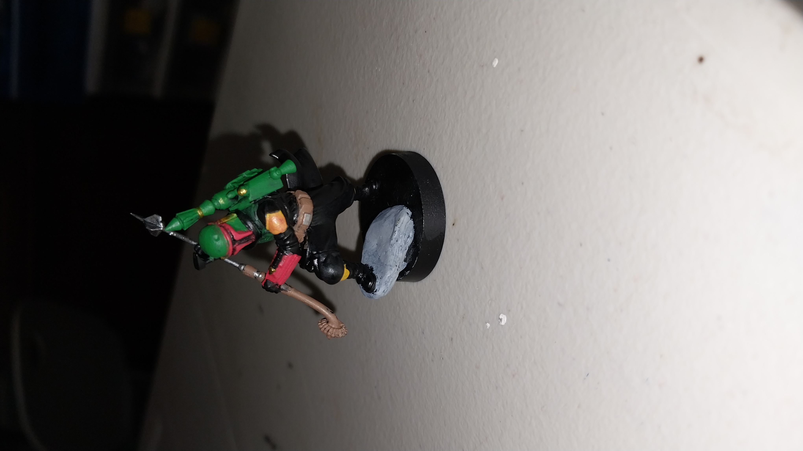
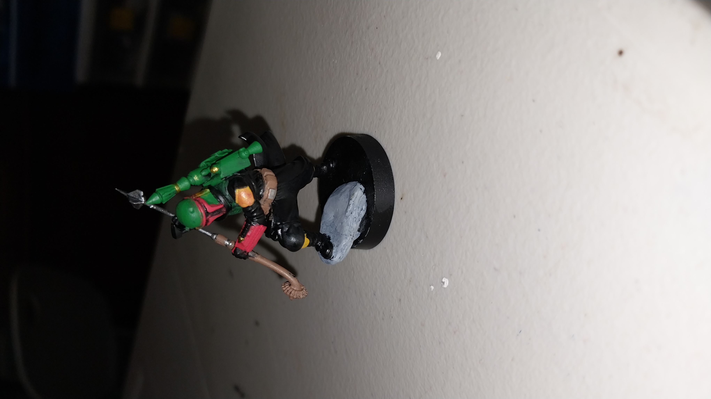
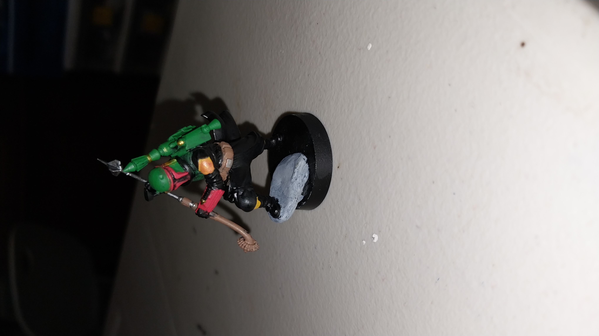

One thing that I got into a year ago is painting miniatures—and it's been an absolute blast! There's something deeply satisfying about bringing tiny characters to life with color, texture,and personality. The models pictured below are some examples of some of my first miniatures that I've ever painted: The first two photos depict my first ever miniature that i've painted and it even came in a little "learn to pain" kit, the 3rd is Boba Fett from Star Wars Legion, getting ready to strike with his Gadaffi Stick, and the last three photos are from a game called Conquest: The Last Argument of Kings, and the figure is the sorcerer from the Sorcerer Kings faction.

Watching talented artists work is incredibly motivating! Here's a video of an Apex Predator from Conquest: The Last Argument of Kings. Someday, I want my painting to be as good as hers.
Here’s an interesating Tableau visualization about Tabletop Miniature Games on Kickstarter that I found!